重要指南
你一定需要知道的商人们
本攻略介绍你需要知道的商人位置和他们卖的货品，有的商人不在地图标注，如果怕漏可以在地图标点一下。以下没有说明的话商人都是在黄色箭头位置。
⌕ 所有图片均可双击放大；也可聚焦图片后按 Enter 查看原图。
清河不羡仙-唐宝
唐宝是你解锁重要心法“易水歌”的方式，绝对不能错过。
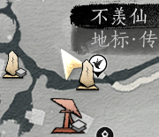
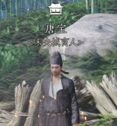
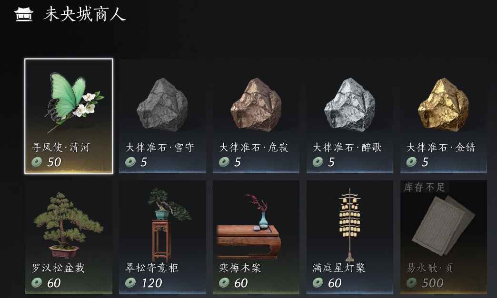
开封临津渡-唐纶
唐纶卖很多你需要的心法书页，千万别错过。早期就靠他升级心法了。
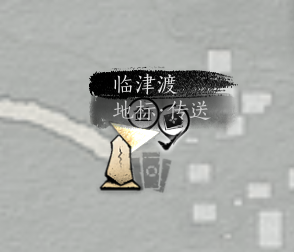
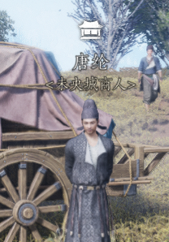
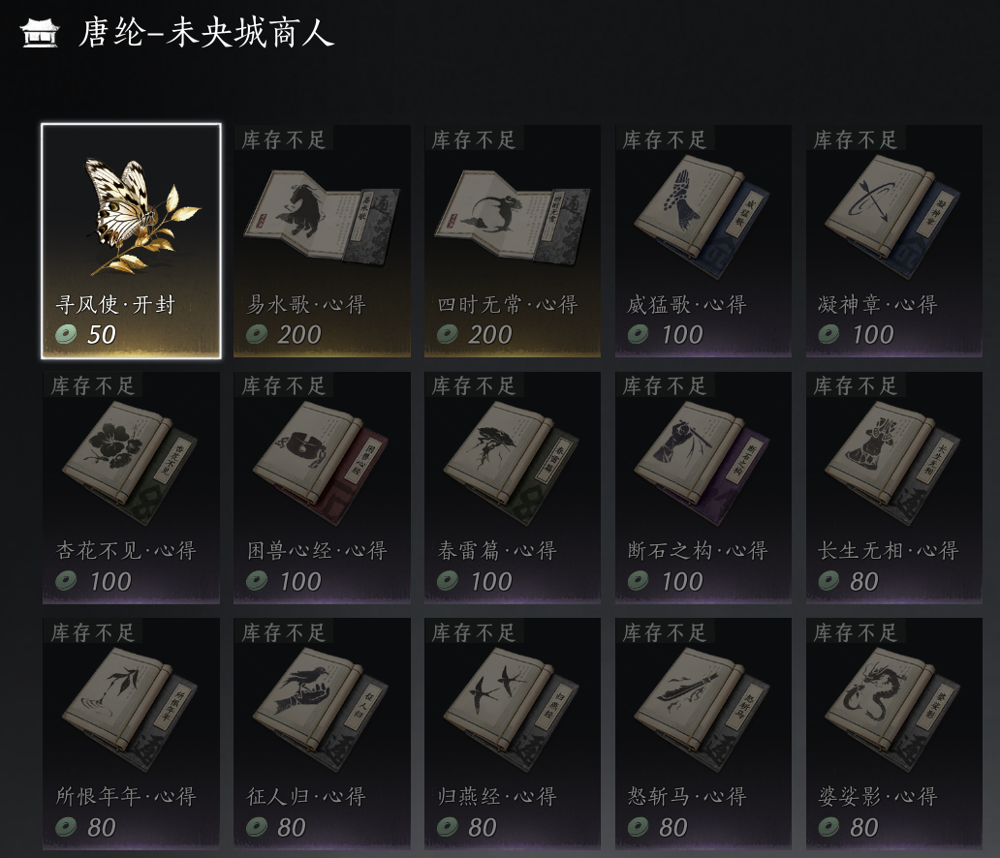
开封杂卖场-赵飞烟私库
位置在开封皇宫北边，杂卖场界碑东北方向，下图商店图标的位置。需要潜入进去和赵飞烟对话后解锁。可以在他这里用通宝兑换心法箱子，袅袅之音。
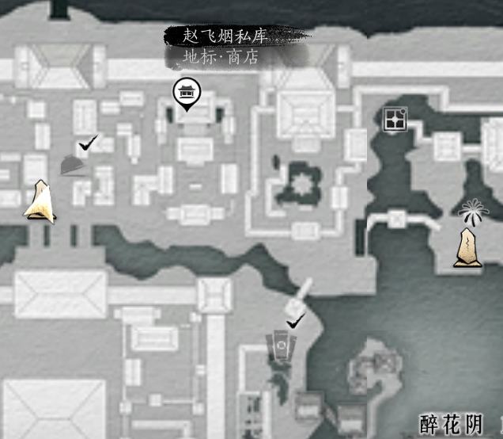
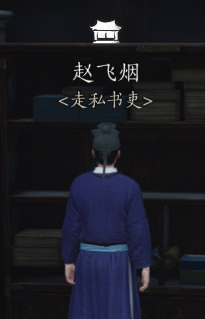
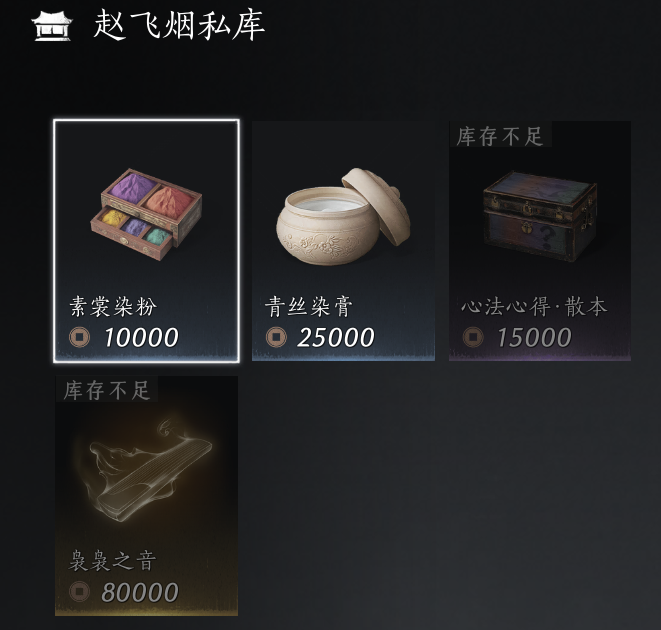
河西玉门关城前隘-阿巴的淘金铺
阿巴就在城前隘的传送点附近，地图商店图标的位置。她有81阶，86阶，91阶的转律石和变音石，以及破竹尘流派的部分心法书页售卖。
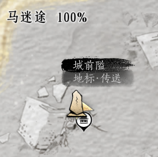
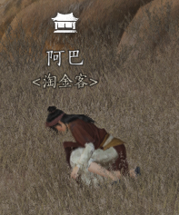
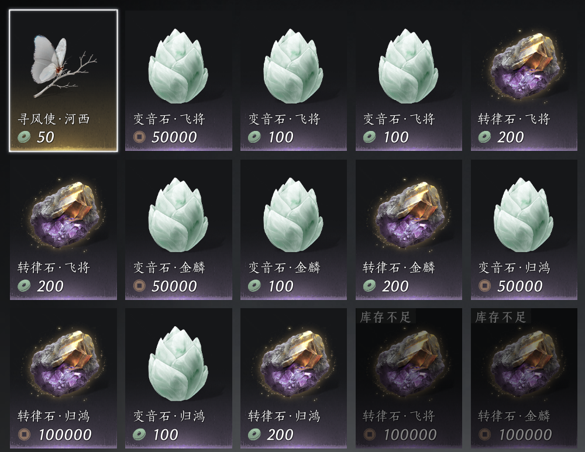
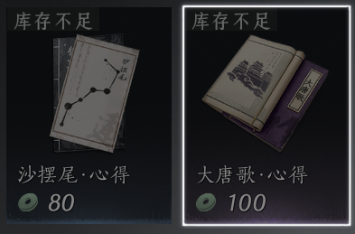
河西玉门关胡杨集-陈七七
这是个隐藏商人，陈七七需要五色琉璃彩。五色琉璃彩的采集方式可以参看本站五色琉璃彩的攻略。陈七七位置在胡杨集传送点东北方向，下图黑色图标位置。可以在附近一棵树上找到陈七七。这个商店可以兑换到20个心法箱子。
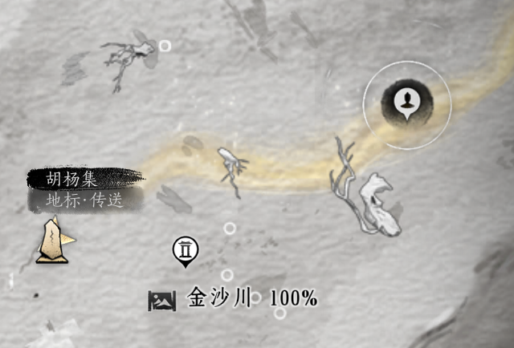
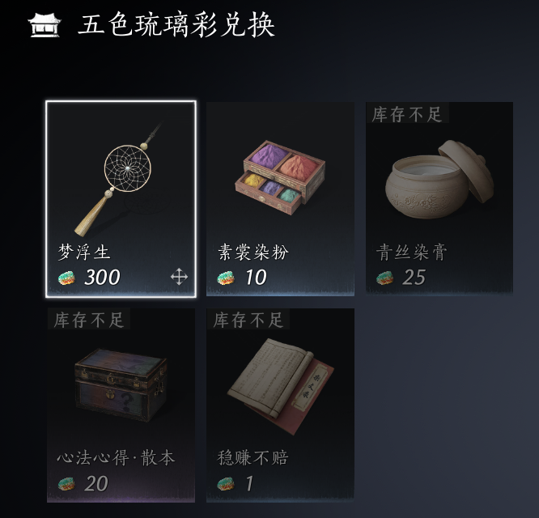
河西凉州镇天水集-蚕郎的杂货摊
蚕郎这里卖裂石钧和一些通用的心法书页。
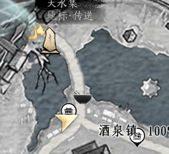
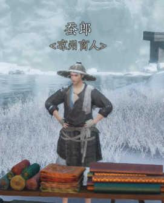
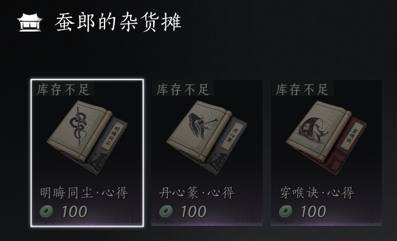
河西凉州镇天水集-孙孟梁的杂货摊
孙孟梁这里卖重要的增益食物配方（91阶），和建造的配方。
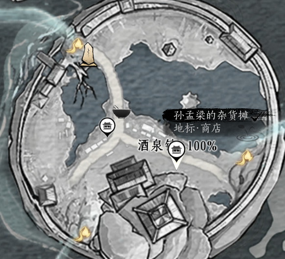
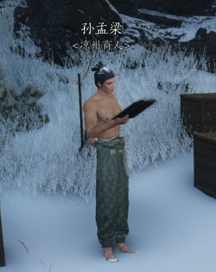
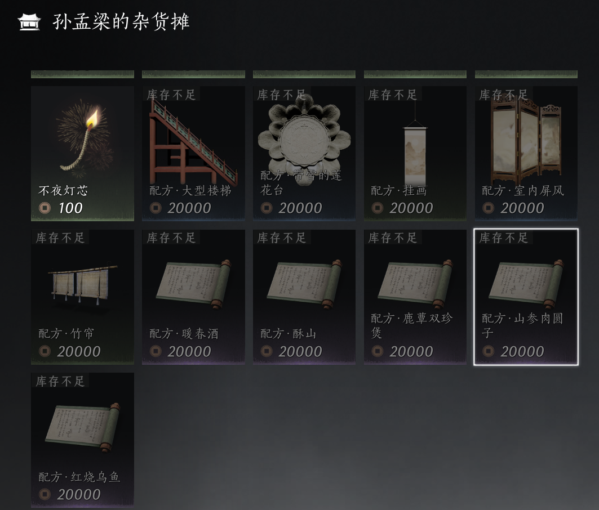
不见山墨守亭-鲮货郎
鲮货郎可以在不见山墨守亭传送点的北边找到，是一个像自动贩卖机的装置。它贩卖96阶的转律石和变音石，破竹鸢流派的心法书页，以及一些不见山的采集物品。
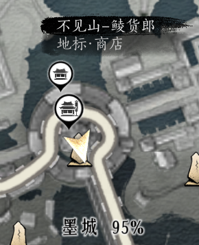
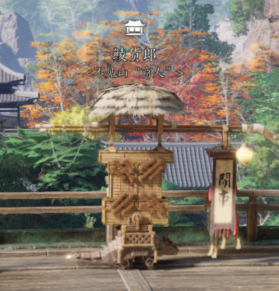
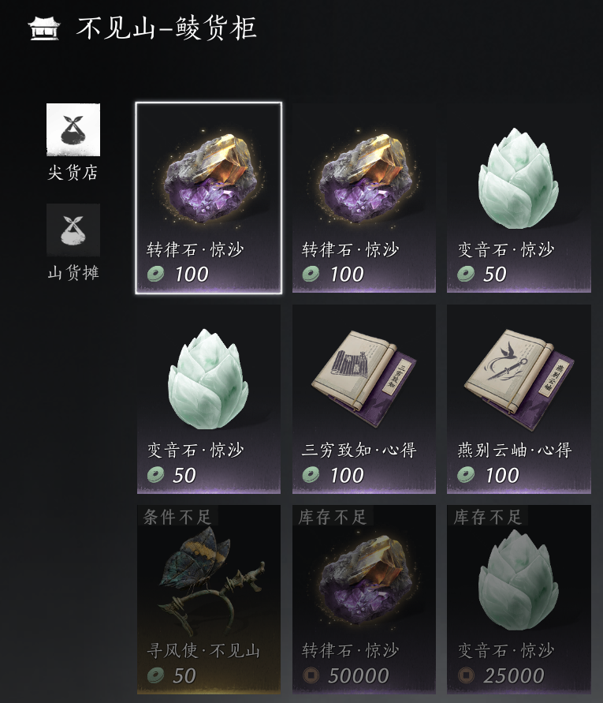
不见山隐峪-隐峪小店欧息
这是唯一一个藏在据点里面的小商店。先传送到隐峪界碑，然后顺着路往北杀进据点，可以在二层路的右侧方向找到一个非常小的山洞，里面有个坐着的人偶。
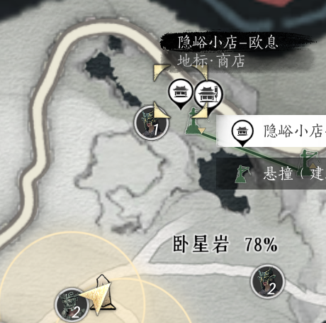
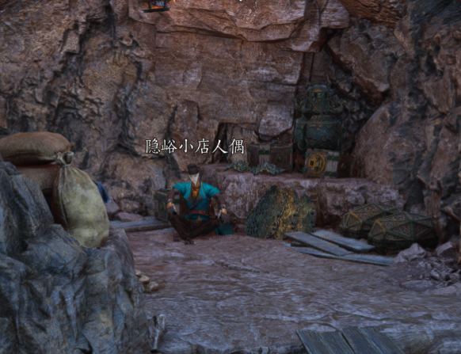
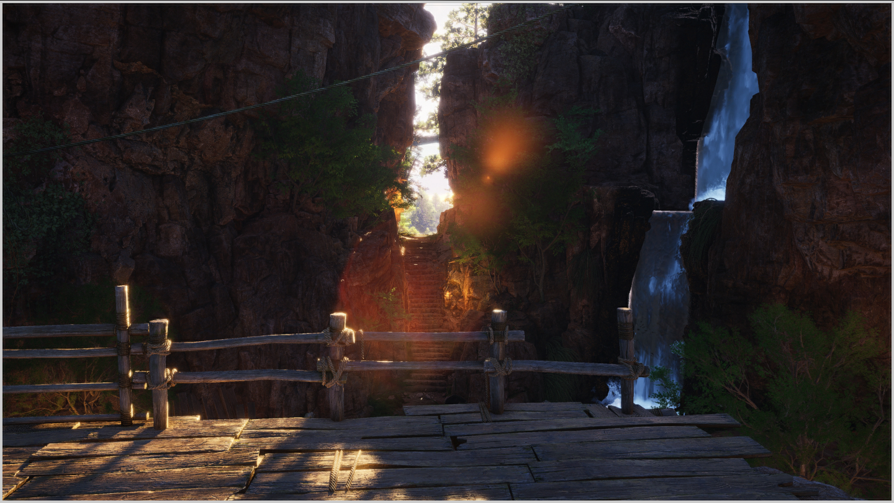
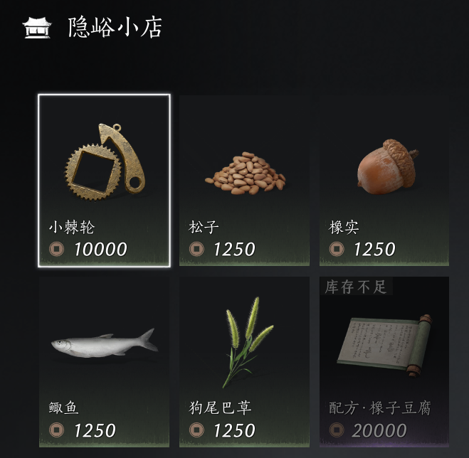
（注：上图是人偶朝外看到的景色，如图所见，山洞在据点的二层，朝向一个可以看见瀑布的地方，一层是据点的中心。）
不见山易墨坊-琳琅小店
这也是个隐藏商人，位置是不见山的易墨坊传送点，面向西南方向的小店就是（如下面地图所示箭头朝向）。里面有一只叫吉吉的猴子，可以用狩猎不见山“马猴”的各种掉落材料和它兑换心法箱子，袅袅之音，特殊外观等等。心法箱子的兑换材料“小棘轮”也可以通过加入墨山道解锁门派商店后用通宝兑换。
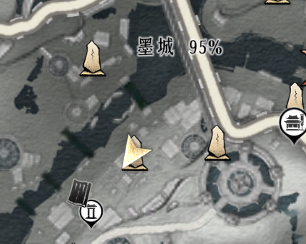
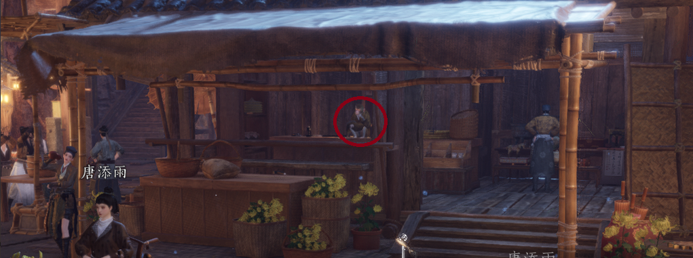
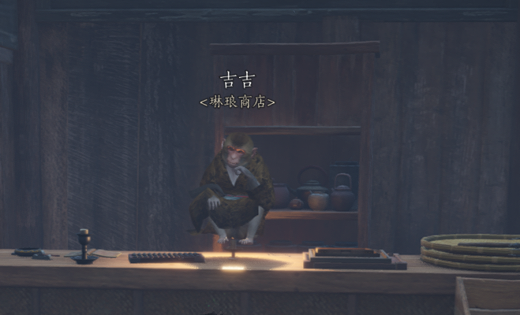
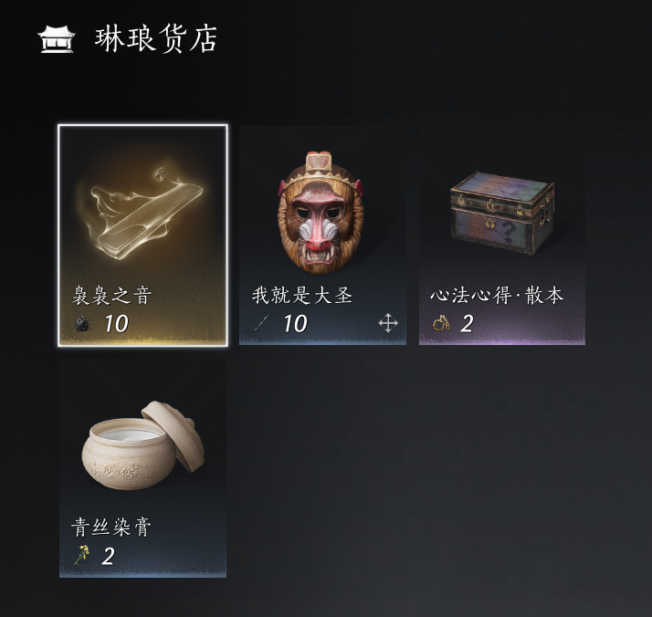